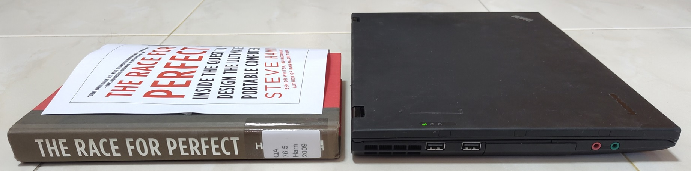
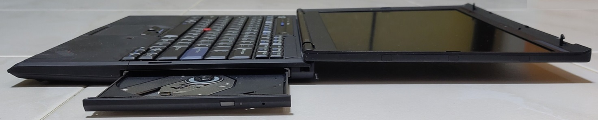
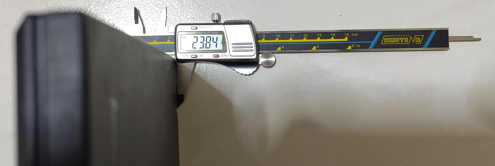
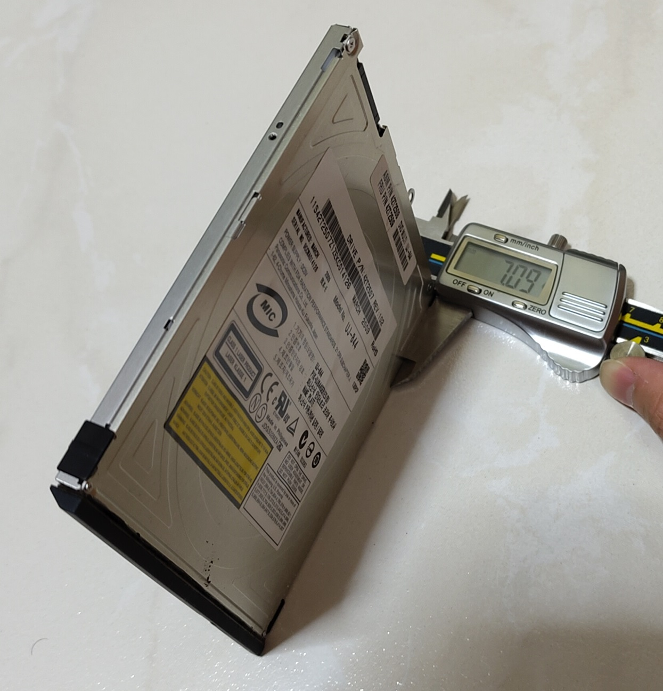
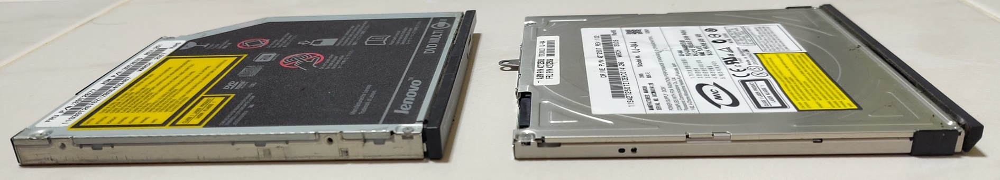
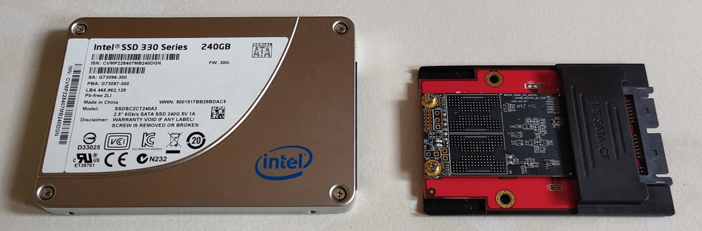
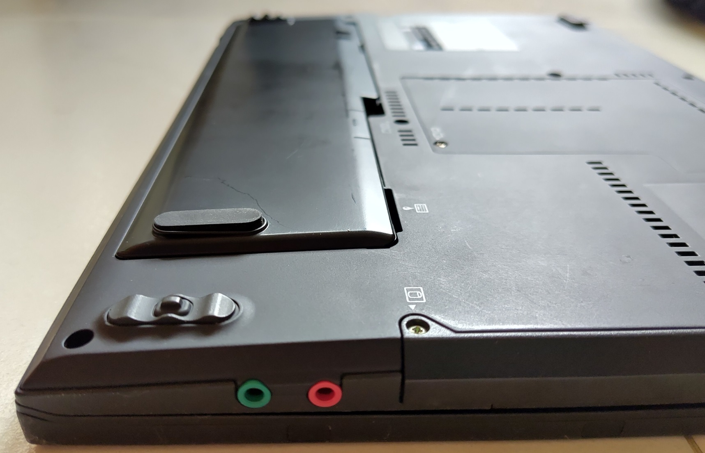
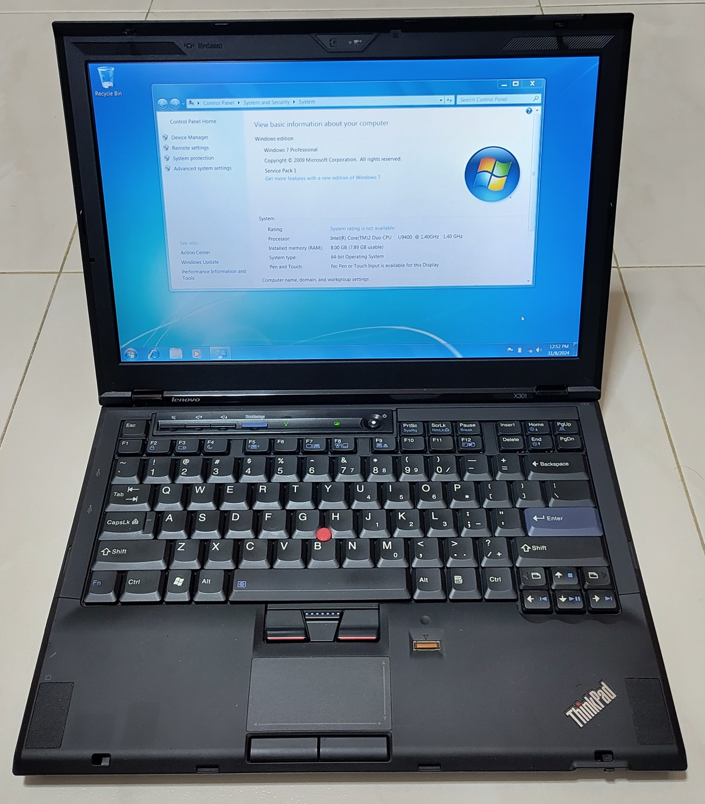

The Thinkpad is arguably the one of the most iconic and consistently long-running laptop brand in the world today. Back in 2008, Lenovo released the Thinkpad X300 to critical acclaim. Being released shortly after the first Apple Macbook Air, plenty of comparisons were made between both machines as both were extremely slim machines at that time.
I first heard of this book online entirely by chance when I was reading about the history of prior Thinkpad models. This book covers the backstory of how the engineering marvel Thinkpad X300 came to be. Although the X300 has long gone out of production, the design language of the X300 lives on today as a foundation to subsequent models in the Thinkpad line such as the X1 Carbon.
This 2 minute advertisement from Lenovo should give a quick primer of the laptop.
The 16-year-old specifications are obviously out-of-date by today’s standards but definitely were cutting edge for the time. Technologies we take granted today like SSDs and LED backlit displays were relatively new to laptops then.
Getting the book and the machine
I initially tried to borrow from the Singapore National Library however they did not have hardcopies that can be borrowed out. As I’m a current NUS Masters student, I have an alternative source which is the NUS library. That copy however did not come with its decorative dust jacket so I to print one out for the photo.
I was so impressed after reading this book that I decided to get this machine to personally experience for myself why was it so famous at that time.
When new, this machine cost US\$3000 in 2008 money which is approximately US\$4400 or SG\$5700 today. That level of pricing for a laptop today is what one would typically hit with a workstation-class, gaming or desktop-replacement laptop, not an ultraportable but here it is.
The machine that I purchased from the second-hand market is the X301. The X301 is a small technical update to the original X300 in terms of a better CPU, DDR3 RAM and addition of a Displayport but is otherwise almost identical to the original.
The laptop has a DVD optical drive which is exceptional for a laptop of this level of thinness.
Review
The book is divided into 11 chapters excluding the introduction:
- The Quest
- Dynabook and the Legacy of Xerox PARC
- Compaq versus Apple
- ThinkPad
- Yang’s Dream
- Kodachi
- The Race
- Hype, FUD, and E-Marketing
- Very Small Computers
- The Convergence Converges
- The Future of Portable Computing
Obviously I can’t cover every point in the book so in this review, I shall pick out points from selected chapters that I found to interesting and share my personal thoughts on them in relation to modern times.
The book is written by Steve Hamm a journalist, freelance writer and documentary filmmaker. He was then IBM’s chief storyteller.
1. The Quest
The very first chapter does a brief run-through on the actions of many tech companies to produce a laptop of a small form factor.
During Macworld in January 2008, Steve Jobs from Apple unveiled the Macbook Air.
In an iconic moment, Jobs took out the Macbook Air from a regular office envelope. (03:25 of video).
That showy gesture could have been a crushing blow for Lenovo. The X300, on the drawing boards since June 2006, had just that morning received the go-ahead for manufacturing in a factory in Shenzhen, China. Like the MacBook Air, the X300 was supposed to cause a sensation with its thinness. Yet it was in danger of being upstaged—even though it was aimed at businesspeople, while MacBook Air was for consumers.
In the surface, Steve Jobs basically stole Lenovo’s thunder somewhat for being among the first to sell thin laptops in the eyes of consumers. However, the X300 was significantly different from the Macbook Air as it included many other features like the optical drive and many other ports.
At the last part of this chapter, Hamm highlights the issues PC-makers like Lenovo faces where they are mostly acting as systems integrators. It is worth recapping that the Thinkpad brand originated with IBM before they sold their PC division to Lenovo in 2005.
As the PC era shifts into the mobile computing era, Lenovo faces stiff challenges of its own. Like other PC makers, it does not control its fate, technologically. The vast majority of PCs contain processors designed and manufactured by Intel, and most are loaded with Microsoft’s Windows operating system. Any PC company can load Linux onto its machines as an alternative to Windows, and most do. Storage devices, modems, screens, and radio transmitters are produced by a mere handful of major suppliers, who provide these components for all of the PC makers. The basic laptop is becoming a commodity. One is pretty much like any other. So how is a company like Lenovo to differentiate itself from its rivals?
Its answer is design and engineering excellence. When Lenovo bought the IBM PC division, it inherited two valuable assets, the ThinkPad design tradition and an engineering group in Yamato, Japan, that is arguably the best team of computer engineers in the world. The company’s goal is to outengineer and outdesign the competition—producing machines that will command a premium because of their durability, reliability, rich set of features, and good looks.
The commodification of laptops and lack of technological control is why there are relatively few new entrants to the laptop markets today. Many new entrants opt to use hardware designed by existing ODMs.
A huge exception that comes to mind is the Framework laptop who similarly can command a premium because of unique features like repairability.
4. Thinkpad
Let me jump to chapter 4 which is about the history of how the Thinkpad is what it is today. I will focus on the distinctive traits of the Thinkpad.
The origins of why Thinkpads have their distinctive black colour today can be traced back to the late Richard Sapper, a German industrial designer who consulted for IBM.
Relatively early on, Sapper concluded that IBM portables should be black so they would stand out from the competition. But he had no luck swaying the product development bosses in Florida. Finally, Sapper forced the issue. He contacted IBM Chairman John Akers and asked him to look at two designs side by side, one produced by IBM’s people in Florida and one by him. The meeting took place in Akers’s office in New York. “We asked him to choose, and he chose mine,” Sapper recalls. “I think from that point on I was the most hated man in Boca Raton.” But, from then on, black became the color of IBM portables. “It was a classy look,” says Bruce Claflin, who ran the ThinkPad business early on.
It is helpful to remember that although we know Thinkpad as a laptop brand today, the very first Thinkpad was actually a tablet PC.
The model is the 700T from 1992. According to the book, the Japanese Yamato design team conceptualised products meant for different scenarios.
One of the first products that came out of this conceptualizing was a technical failure and a major embarrassment for IBM. But it accomplished two important things: it set the stage for better portable design and engineering and it gave IBM the name ThinkPad.
Another distinctive Thinkpad feature that exists till the present is the red pointing stick that is mounted centrally in the keyboard.
Back in the early 1980s, when (Ted) Selker was a graduate student at Stanford University, he had designed a small pointing device, which he thought of as a tiny joystick, to be embedded within the keys of a keyboard and operated with the index finger….
Selker’s original invention for IBM was a little post that stuck up from the keyboard. Although the idea of an in-keyboard pointing device seemed promising, making a joystick that pointed as well as a mouse was hard work. Over a period of four years, they (with Joe Rutledge) worked together on TrackPoint, which they originally called Pointing Stick.
The Trackpoint did not gain much traction initially, but eventually it was included on Thinkpads.
5. Yang’s Dream
Yang here refers to Yang Yuanqing, current chairman and CEO of Lenovo. His dream was:
…to turn Lenovo into a highly respected global brand. He wanted it to become the first Chinese company to make the transition from local champion to global powerhouse.
Before this, Yang started out as a salesman in Legend (the previous name of Lenovo) before working his way up the ranks.
At around the same time, IBM was looking to sell off its struggling PC business and Lenovo was looking to expand internationally. The seeds were sown for a potential mutually beneficial deal between both companies.
If one were to read most conventional news reports from that time period, the takeover process would seemed to have happened relatively rosily aside from some external government concerns. In reality behind the scenes, the book shared that:
The entire board of (Lenovo) directors lined up against Yang. Think about what he was asking the Lenovo elders to do: a \$3 billion company based in China would be taking over a \$10 billion global behemoth. IBM had practically invented the PC industry; if Big Blue couldn’t make money selling these machines worldwide, how could little Lenovo hope to do any better?
Yang and his team later managed to win over the top executives of Lenovo by assuaging their main concerns of managing this company by hiring IBM’s top executives.
IBM would sell Lenovo PCs through its sales force and distribution network. IBM also would provide services for Lenovo PCs and allow Lenovo to use the vaunted IBM brand name for five years. In turn, Lenovo, leveraging its connections with the government’s Chinese Academy of Sciences, would help IBM in the fast-growing China market…..
…While the company gave up some revenue growth by shedding the PC business, its profit margins had improved dramatically. There were other benefits for IBM, too. By helping to turn Lenovo into a global PC player, IBM increased the pressure on its main rivals in the overall computer business…
This was clearly a win-win business arrangement between IBM and Lenovo.
6. Kodachi
This chapter goes into the first of the meaty content on how the X300 was initially conceived. The first part was about the codename of the product itself.
This naming of electronics works in progress is something of an art. The name has to be new, cool, and, if possible, symbolic. In October 2006, … the ThinkPad crew dropped the name Razor and renamed the project Katana. The code name refers to a samurai warrior’s sword that’s extremely thin and sharp… But, almost immediately, the Japanese engineers wanted the name changed again. Suzuki had a motorcycle named Katana. In the end, they settled on Kodachi. It’s like the katana sword, only shorter—so a warrior can draw it quicker. In every way, the Kodachi is optimized for speed.
I personally have been involved in hardware product design where there are codenames being used to describe the projects. While codenames are seldom used outside the company, it does endow the product with the spirit of what it should be for employees to achieve it. I can totally understand why the engineers were very particular about this codename.
The specifications that were planned for the X300 were:
The machine would be 19mm thick on the front end and slightly thicker on the back and would weigh just 1.54kg. It would have the 13.3-inch wide screen with LED backlighting. And it would be powered with an Intel Centrino chip package… The Centrino package would include chips for Wi-Fi wireless communications,.. Kodachi would also have SSD and the ultrathin DVD drive.
It was to be high end all the way. Yet the goal was to have the machine cost less than \$3,000 at retail, quite a feat given all of the new technology that was to be shoehorned in…. it would not be the thinest notebook computer ever… the engineers wouldn’t compromise on some attributes that were fundamental to the ThinkPad brand (like the keyboard)
I measured the rear-end of the machine and it is just shy of 24mm. Thin for a machine of this capability at that time.
Another key part of this chapter was the push by Lenovo to create new innovative products to prove that quality has not declined. During the tail end of IBM’s struggling PC division, there was greater emphasis then on cutting costs rather than innovation.
With Lenovo now in charge of this PC business and renewed emphasis on innovation to prove a point, the Thinkpad’s engineers were once again able to experiment on new designs.
7. The Race
For those into the engineering aspects, this chapter I feel is the most significant part of the entire book. This chapter goes through the engineering challenges and decisions made in bringing the product to its form. The Race is so-named because Lenovo is now in a race with other companies to beat them to market with this product.
industrial design was becoming more important to the entire top tier of PC makers. At one time IBM’s ThinkPads and Apple’s notebook PCs had stood out from the rest of the pack. But, now, HP, Sony, Dell, and others were putting a lot of money and effort into design.
Prior to this point, PCs have been for some time, viewed as mere commodities as components and designs have become relatively generic. However PC-makers were now realising design is the way forward to differentiate themselves in the eyes of consumers to escape the low-margin business.
For Lenovo, creating the X300 was definitely much easier said than done. The X300 was so revolutionarily small that it caused issues with its suppliers.
It depended on dozens of suppliers for the components that would go into Kodachi, everything from the solid-state storage device to the set of chips that controlled the machine and to the fan that would cool it. In several cases—the storage device and ultrathin DVD drive among them—the technologies Kodachi’s planners had chosen were new to the suppliers as well.
This was the first time the ThinkPad team was using the thin DVD drive… but this technology was so new that there were not yet industry standards for specifying the size and capabilities of the devices. To make matters even more complex, because the technologies were new, the suppliers would be completing development of their pieces of the puzzle even while Kinoshita’s team in Yamato was piecing the whole puzzle together. In a sense, the Yamato engineers were helping the suppliers develop their own products.
I decided to measure the the optical drive used by X300/X301 myself and it truly is only 7mm thick. This should be the thinnest commercially-used laptop optical drive in the world at that point and the record should still stand today.
Based on other sources, this optical drive was specially designed to be this thin by Panasonic for the X300 program. When the X300/X301 finally went out of production, Panasonic discontinued producing this optical drive due to the extremely high costs involved.
This shows the difference in the drives. The optical drive on the left used by conventional Thinkpads is 2mm thicker at 9mm.
Left shows a conventional 2.5” SATA SSD. Right is a 1.8” form factor used by the X300/X301. 1.8" drives are extremely uncommon/expensive to procure this days so the best way to keep it working today is to use a mSATA SSD with an adapter.
Even the battery design also involved some serious thought:
Often, PC makers offered customers the option of buying a longer-life battery. Typically, longer life meant bigger. Engineers would offer a special battery that stuck out of the back or front of the notebook chassis. But the Kodachi designers didn’t want an ugly bulge on their beautiful machine, so they searched for another way to get longer battery life. In this case they decided to offer a larger battery as an option, but position it on the bottom of the computer. It would bulge out a little bit, but nobody would see it unless they turned the machine over.
The “stuck out the back or front of the chassis” is quite true based on the many vintage Thinkpads and other laptops I have used so far. Extending to the bottom for the main battery is very uncommon.
My X301 has this exact 6-cell longer-life battery that intentionally bulges downwards. It has its own set of rubber feet to grip the ground as the laptop’s own feet obviously does not work with this thicker battery.
One of the problems that arises when you set out to design a thin and light computer is that it’s difficult to be thin and light and also strong. People abuse their computers…. the Yamato engineers came up with a novel idea for strengthening laptops. They designed a metal frame that nestled in the bottom of the computer, which they called a “roll cage”. It worked like a roll cage in a race car—only, in this case, the “passengers” in the car were the motherboard, the hard drive, and other critical components.
With Kodachi, they invented a new generation of the roll cage that was just as strong, but thinner and lighter. The magnesium bottom shell of the laptop formed the base of the roll cage, and, running horizontally along the length and width of the bottom half of the laptop, they placed a magnesium frame that served both as the top of the roll cage and the bezel that supported the keyboard.
The magnesium frame design pioneered in the X300 continues to be employed in the modern X-series laptops today.
For the first time in a ThinkPad, they would be using an LED-based display. The technology was so new that display and PC makers had not yet come up with standard ways of building them. Kinoshita’s engineers couldn’t simply order displays that were already sitting on a shelf somewhere. They had to collaborate with the LED and display producers to come up with a panel that would be custom designed and custom-built for Kodachi.
It can be hard to see but the LED backlight does give a good contrast ratio. They are also slimmer and use less power than conventional CCFL-backlit displays.
on the marketing front: Kodachi finally had an official name. There would be no brand-new S Series. They’d include Kodachi in the X Series. It would be called the ThinkPad X300. The 3 stood for 13 inches (33 centimeters) wide.
This naming convention would be followed again in 2019 for one time in the release of the X390/X395.
Up until that time, Intel was an engineering-centered company. The chip designers would come up with improvements, the manufacturing people would make the chips, and the sales and marketing people would sell them. But Paul Otellini, then the company’s executive vice president, who had a product marketing background, thought it was time for a change. Intel needed first to map out where its markets were going and then design chips suited for those new demands. In response to his urging, CEO Craig Barrett divided the company up into business units targeting different market segments. One of the units was for mobile computing.
With the benefit of 15 years of hindsight, I wonder how much of the change that started at that time contributed to the struggles that Intel have today.
This book goes through many other issues encountered and actions taken by the development team to overcome them:
- Squeezing in stereo speakers over mono speakers
- Backlighting of the Thinkpad logo
- Matte coating of the enclosure
- Data integrity problems of SSDs
- Heat issues
- Display smear caused by component pressure
- Wimax technology not ready
- Buggy Intel Centrino chips
When Steve Jobs introduced the Macbook Air, the Lenovo team initially went into panic mode. Looking deeper into their differences, the Air was not the immediate clear-cut winner.
X300 was slightly thicker at its thickest point, but the version without a DVD drive—which Air didn’t have, either—was slightly lighter. Air had some nice features, including backlit keys on the keyboard and the ability to use iPhone-like finger gestures on the touchpad. But, he was greatly relieved to see that, overall, the Lenovo laptop was clearly superior when it came to basic capabilities.
X300 had three different battery options, and the batteries were easily removable; Air’s battery was built in. If you were on a long plane flight, you couldn’t replace it with a backup.
X300 had three USB ports, plugs where you could attach in a printer, a mouse, a small memory stick, or other peripherals; Air had just one.
X300 had all of those wireless radios plus a plug for a network cable; Air offered fewer wireless options and no network plug. Air had a faster processor, but there were other matchups where X300 won, too.
This tongue-in-cheek advertisement from Lenovo clearly illustrates the differences:
The X300 fits in the same envelope size as Steve Jobs used but is a way more capable machine. The Macbook Air has to include a lot of accessories to match the capability of the X300.
I can say this ad is clearly still relevant today with the relentless drive to make laptops (and phones) even thinner, is that necessary considering what must be given up to achieve that?
Thankfully modern Thinkpads still come with a plethora of ports. Apple even walked back on this by re-introducing HDMI ports and SD card readers to their MacBook Pros in 2021 after years of their absence.
8. Hype, FUD, and E-Marketing
This chapter goes through the more business-related aspects.
After Lenovo took over IBM PC’s business, it faced many issues related to Fear, Uncertainty and Doubt (FUD) sowed by its competitors and other parties. The book reminds us of a famous FUD phrase related to IBM itself “Nobody ever gets fired for buying IBM”.
In its effort to create a strong global brand, Lenovo had to overcome powerful negative perceptions:
(1) China is a scary nation that has suspect global ambitions, and it’s taking American manufacturing jobs;
(2) the Chinese make cheap, low-quality knock-offs, so they won’t do justice to the ThinkPad brand;
(3) ThinkPad has been on the decline, anyway
That explains Lenovo’s drive in creating the X300 to provide a strong counterexample.
In terms of branding, Lenovo was a known brand in China but not so much in the international markets:
the new Lenovo had to start from scratch to build a global brand… As part of the IBM deal, Lenovo had secured the rights to use the IBM logo on its computers and in its advertising for five years. … Some corporate customers had urged them to make the shift quickly rather than dragging it out for five years, and they soon discovered that most customers seemed to be more attached to the ThinkPad name than to IBM. … A key element of shifting over was establishing Lenovo as being as good or better than IBM at laptop engineering and design. Unlike most other PC companies, …it developed its laptops in-house, rather than farming the work out to design and manufacturing specialists in Taiwan and China.
The fact that most customers respected the ThinkPad over IBM reflects the loyal following the brand had garnered over the years as a symbol of quality, reliability, and innovation. Lenovo’s decision to pivot away from using the IBM name (before the 5 years was up) allowed it to have a strong connection with customers while gradually asserting its own identity.
2008 was also the year of the Summer Olympics in Beijing. This was an advertising opportunity that could not be missed both to the company as well as the impression towards the Chinese industry.
The company spread its message on more than 1,000 billboards throughout Beijing, on 500 buses that were cruising the city’s streets, and via TV ads. Everywhere there were Lenovo computers—12,000 desktop machines, 800 notebooks, and 700 server computers—running every aspect of the giant operation. And ThinkPad X300 was featured prominently.
Conclusion
On the surface, the Thinkpad X300 is already without a doubt, an engineering masterpiece from Lenovo. It managed to cramp many features into a form-factor with the best technology available at that time. I think many people can agree that Lenovo struck a better balance between thinness vs practical usability compared to the first Macbook Air.
Hardware companies generally tend to be more guarded. So it’s eye-opening whenever there is an opportunity to look behind the scenes to see how such a product is developed, especially one that is so challenging and pivotal.
Although this book was published 15 years ago, I believe the engineering and business lessons it has covered continues to be relevant. Bringing a consumer hardware product to market successfully will always involve more than just industrial design and engineering. To succeed, there are other business aspects to be concerned about like supply chain, marketing, reacting well to the competition and corporate branding etc.
This book provides an all-rounded view into how a then internationally-unknown Lenovo managed to pull this off undoubtedly leading to it being the largest PC maker in the world today. Aside from Lenovo, we have also observed other Chinese companies bursting to the world stage in this decade and a half.
I was glad that I purchased a used X301. After reading this book and experiencing the machine first-hand, I gained a better appreciation of the story behind it. The X300/X301 will still not look out of place even if they were released today. Given its prestigious background, this X301 will definitely stay in my vintage computer collection for a long time to come. You can probably agree this book review will definitely not be the same without the physical machine in my hands.
There are lots of content in this book about computing history, the hardware business and its view of the future but there is only so much I can cover and comment short of writing a post longer than the book itself. For people interested in these topics especially Thinkpad enthusiasts or people involved in the hardware business, this book is definitely worth adding to your reading list for greater depth.
I hope there will be more books written next time on other hardware products. (looking at Framework :P)
If you are keen to know more about the X300 in the moving visuals sense, I can suggest this Project Kodachi series of videos by Youtuber Laptop Retrospective.
This is the first of 9 videos in the playlist.


{kind=link}
{kind=link}
{kind=link}
{kind=link}
{kind=link}
{kind=link}
{kind=link}
{kind=link}